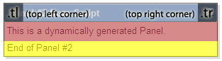
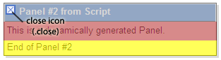

- YUI Container: Tutorials
- Module: Quickstart
- Overlay: Quickstart
- Tooltip: Quickstart
- Tooltip: One Tooltip, Many Elements
- Panel: Quickstart
- Panel: Skinning
- Skinning the Panel
- Functional Example
- Panel: Advanced Skinning using CSS
- Panel: Creating a 'Loading' Popup
- PhotoBox: Subclassing Panel
- ResizePanel: Creating a Resizable Panel
- Dialog Quickstart
- SimpleDialog Quickstart
- Using ContainerEffect
- Using OverlayManager
- Using KeyListener
Skinning the Panel
Panels (and all other containers using Standard Module Format) can be skinned using CSS to customize the look and feel of each component. In order to best explain how to customize the Panel's style, it is important to first understand the structure of the basic Panel, which looks like this:

Breaking the Panel down into its basic Standard Module Format, its structure can be diagrammed as such:

The Panel, like all other YUI Container controls, has a header, body, and footer. In addition, the Panel also has a "close" element containing a background image to give it the appearance of a UI window close control. In this tutorial, we will manipulate the CSS styles for these elements and create several new elements to allow for additional pieces of the skin to be styled.
First, we will create rounded corners for our skin by applying images to the top left and top right corners of the Panel header. All of our CSS styles are applied to this Panel instance using ID selectors. In this case, the Panel's ID will be "myPanel", so all styles will begin with "#myPanel". In order to facilitate the creation of these corners, we will create two new empty div elements in the header, classed as "tl" and "tr" for "top left" and "top right":
Notice that the title is placed into a span tag. This is so that it can be more easily styled using CSS. The images will be applied as background images to each of our new corner elements, along with width and height styles, positioning, and margins:
After absolutely positioning the new corner elements, they are anchored to the left and right corners of the header, as shown in this diagram:

In this skin, we want our close icon to be positioned on the left side of the header, rather than the right side. We can override the existing "close" style so that the icon will be placed on the left. At the same time, we will apply background images to the close icon for both secure (https) and non-secure (https) servers. Since mixed content from secure and non-secure sites can cause security warnings in some browsers, YUI Container provides CSS hooks for both contexts so that you can specify proper sources for both.
Again, charting the repositioned close icon, it would look like this:

Styling the body and footer are as simple as overriding the default styles with the desired ones:
After applying all the styles to our Panel instance, the final output looks like the image below. Looking at the chart, we can see where the original familiar elements end up in the new layout, in addition to our newly created corner elements:


We will tackle another skinning example in the Advanced Skinning Tutorial.